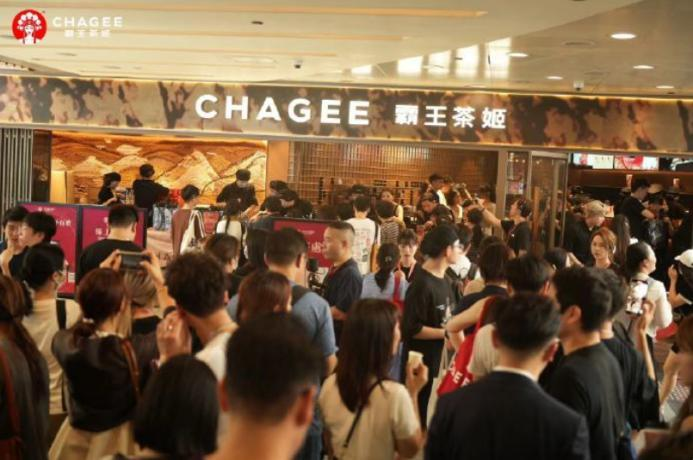

Research overview
If this current wave of discussion has to be reduced to one research-guided sentence, it would be this: modern tea drinks can deliver a meaningful caffeine exposure because of real tea bases, stronger extraction, large cup formats, and formula variability, while broad folk wisdom like “tea is gentler than coffee” cannot replace judgment about dose, timing, metabolism, and transparent labeling.
Recent Chinese internet discussion has become much more specific than the old question of whether milk tea can keep people awake. The newer questions are sharper: how much caffeine is actually in a cup, how much tea bases differ, why some people feel palpitations from an evening light milk tea, whether brands should label more clearly, and how consumers can estimate their own sleep window before ordering.
For a long time, “tea is gentler than coffee” functioned like common sense. It was not entirely irrational. Traditional tea-drinking often happens more slowly, in smaller concentrated servings spread over time, and in a context that does not resemble grabbing a large stimulant drink on the way to work. But many of today’s bestselling tea drinks no longer belong to that older rhythm. They are larger, more standardized, easier to drink quickly, and often wrapped in language about freshness, lightness, and tea authenticity. That can make consumers feel they are ordering something softer and more manageable than they really are.
That is why the most interesting part of the current debate is not the old tea-versus-coffee argument. It is a newer and more practical set of questions: why does caffeine exposure vary so much from one tea drink to another? Why can two jasmine or oolong-based drinks feel radically different in the body? If a brand markets real tea leaves, fresh extraction, and stronger tea character, should it also take on a clearer communication burden around caffeine? And most importantly, how can an ordinary consumer translate ordering pleasure into a realistic guess about whether tonight’s sleep will be affected?

Topic: caffeine exposure, sleep effects, variability, and labeling debate in modern tea drinks Key issues: tea-base differences, extraction, cup-size amplification, metabolic variation, sleep timing, palpitations and jitter, brand transparency, and consumer judgment Best for: readers who buy modern tea drinks often, have personal experience with tea-drink sleep disruption, and want calmer research language around a hot public topic Core reminder: what shapes sleep effects is not only whether a drink counts as tea, but total exposure, timing, pace, personal sensitivity, and whether the available information is stable enough to interpret.
Because the argument has shifted from vague feelings to a demand for predictability and transparency. Recent Chinese discussion around caffeine in modern tea drinks has at least two amplifiers. First, tea drinks are now part of routine life for many consumers: they are bought more frequently, later in the day, and in larger formats. Once that happens, what used to feel like an occasional side effect becomes a real lifestyle problem—late sleep, palpitations, empty-stomach discomfort, or the strange experience of feeling overstimulated by a drink that does not mentally register as “coffee.” Second, brands increasingly market real tea leaves, fresh extraction, and stronger tea character, which naturally pushes consumers to ask whether a stronger tea identity also means a more meaningful stimulant exposure.
This is also why the debate has split away from generic “healthy or unhealthy tea drink” talk. Consumers now want to know whether they can predict the effect before they order. Once that need appears, labeling, warning structure, tea-base differentiation, and interpretable information all become part of the public conversation.
From a content perspective, the topic is almost designed to spread. Many people have direct experience to contribute, it carries a satisfying “I underestimated this” reversal, and it is not merely a nutrition issue. It affects commuting, meetings, overtime work, emotional regulation, and bedtime itself. No surprise the discussion travels fast.
The problem with “does tea cause insomnia?” is that it is far too coarse. Research does not normally merge all teas, all people, all drinking times, and all serving formats into one question. A more research-like version would ask: what tea base was used, what caffeine range is plausible, how close to sleep was it consumed, how quickly was it finished, was it taken on an empty stomach, how fast does this individual tend to metabolize caffeine, and how sensitive are they to stimulation in general?
This is exactly why online arguments collide so easily. One person says they can drink milk tea at ten at night and sleep normally; another says a four o’clock oolong light milk tea keeps them awake past midnight. Neither person must be exaggerating. The inputs may simply be very different. Research does not treat that difference as noise. It treats it as the center of the explanation: caffeine effects are not a one-variable conclusion.
For modern tea drinks, the question is even more complicated because they are not laboratory-standard beverages. In the real world, tea-drink caffeine exposure can shift with extraction intensity, ice ratio, milk dilution, serving size, tea-base choice, and operational variation between stores and rush periods. Consumers are therefore not dealing merely with the basic fact that tea contains caffeine. They are dealing with the harder problem of where a given cup roughly sits on the stimulation map.
One overlooked reason is that many consumers still imagine caffeine through a simple binary: coffee is high-caffeine, tea is low-caffeine. That may offer a rough first instinct, but it becomes weak once you enter the world of modern tea drinks. The actual exposure in one cup depends on too many stacked variables: the tea category, the leaf load, the extraction method, whether the brew is concentrated, how much water or milk dilutes it, the final cup volume, and whether the consumer slowly sips it across hours or finishes it in ten minutes.
Modern tea drinks also differ from traditional tea in another important way: they are often engineered to be smooth, cold, fragrant, and easy to drink quickly. Caffeine discomfort is not only about total dose. It is also about delivery speed. A person can react very differently to the same total amount if it arrives over three hours versus over twenty minutes. Milk, sweetness, aroma, and cooling sensation can lower the user’s awareness that they are rapidly ingesting a stimulant, which is why some people finish a large tea drink faster than they would ever finish plain tea.
At the same time, many recent tea-drink product directions push toward stronger tea authenticity: real-leaf extraction, clearer tea structure, lighter milk cover, more layered aroma. From a flavor point of view that is often welcome. From a caffeine-management point of view, it introduces a simple truth: making tea drinks taste more like tea does not automatically make their stimulant profile easier to ignore. If a brand sells “more tea,” consumers have stronger reason to ask what that means physiologically.
Because most consumers are not living inside milligram charts. What disrupts life is not a number alone, but the practical question: if I drink this now, will I pay for it tonight? One of the most useful research-facing lessons about caffeine and sleep is not a single universal threshold. It is a more realistic reminder that the pre-sleep exposure window matters a great deal, and individual variation is large. Some people can handle afternoon intake; others need to stop much earlier. Some mainly struggle to fall asleep, while others sleep but more shallowly, more fragmentedly, or wake too early.
This is exactly where “tea is gentler than coffee” stops being enough. It says nothing about timing. It says nothing about metabolism. And it says nothing about how a milk-forward, floral, very easy-drinking tea beverage may still be harder for some people to manage than a small morning coffee. For sleep-sensitive consumers, a large late-day tea drink can be more disruptive than a clearly recognized caffeinated coffee taken earlier.
If I had to translate this into practical language, I would say: ordinary readers do not need laboratory precision to benefit. They do need to stop translating “it is tea” into “it is probably safe tonight.” Tea intensity, cup size, personal sleep fragility, current stress, empty-stomach use, and whether more work is still ahead all matter more than the old label suggests.
Because consumers do not really want slogans. They want usable information. If a brand strongly markets real tea leaves, fresh extraction, and fuller tea character, but remains vague about caffeine implications, consumers feel an asymmetry: they are being asked to pay for stronger tea identity without receiving equally practical guidance about when that drink is safest to consume.
Labeling is also a trust issue, not just a science issue. Most consumers do not expect laboratory-level exactness from every store-made drink. But many do expect honest stratification: which tea bases are usually stronger, which products are less suitable for night drinking, whether approximate ranges exist, whether a lower-caffeine route is available, and whether sleep-sensitive people are being warned in plain language. When those signals are missing, the internet fills the gap with reviews, anecdote threads, measuring attempts, rumor, and dramatic headlines—which often pushes the debate into even less stable territory.
In that sense, labeling is not mainly about scaring people. It is about turning vague bodily experience into something more manageable before purchase.

In online fights, the topic quickly hardens into two extremes. One side says people are overreacting because tea naturally contains caffeine. The other says some modern tea drinks have become almost alarmingly overstimulating. Both framings are too easy. A more research-guided reading is to treat this primarily as an exposure-management problem. The important question is not simply whether tea drinks are good or bad, but which people, at what time, with what frequency, and in which product formats are more likely to enter an uncomfortable zone.
Once framed that way, many disagreements become clearer. It is true that tea naturally contains caffeine. But natural does not mean easy to manage in every setting. It is true that some consumers feel fine. But high tolerance in some users does not justify keeping product information vague. Research is usually not trying to help one side win a culture-war argument. It is trying to make the situation more actionable: clearer identification of late-day risk, more meaningful brand communication, and better recognition of combinations that sleep-sensitive consumers should avoid.
This matters because modern tea drinks are no longer occasional tea-table experiences. They are high-frequency, commuter-friendly, instantly rewarding commercial beverages. Once frequency rises, time shifts later, and accessibility becomes constant, caffeine stops being background knowledge and becomes a variable that needs deliberate handling.
Because it is perfectly built for emotional storytelling. On one side is the revelation narrative: “I thought this was a gentle healthy tea drink and then I could not sleep.” On the other is the smug reply: “But tea always had caffeine.” The first spreads through surprise, the second through superiority, and neither is eager to deal with the hardest real-world issues—dose uncertainty, store variation, metabolic variation, context, and the absence of stable labeling.
Another common distortion is to force every bad experience into a single cause. Someone feels heart-racing and immediately attributes everything to extreme caffeine content. Someone else feels fine and concludes the whole panic is imaginary. Research generally resists both shortcuts. Empty stomach, prior sleep debt, other stimulants, stress level, and bodily vigilance can all shape the experience. Caffeine is important, but it often acts together with other conditions rather than alone.
So the more mature question is not “was caffeine the one culprit?” but “how large a role did caffeine likely play in this drink, at this time, in this person—and could clearer information have helped identify the risk before purchase?” That is much more useful than trying to find a single villain.

First, is this drink strongly tea-forward, or is the tea mostly hidden by milk and flavoring? A stronger tea character does not automatically mean danger, but it does mean you should not use smoothness alone as a guide.
Second, how big is the cup, and how fast will you drink it? Large, cold, smooth drinks finished quickly often shape the actual body experience more than the tea name does.
Third, how close are you to sleep? If your sleep is already fragile, late afternoon and evening are poor places for wishful thinking.
Fourth, what state is your body in today? Sleep debt, anxiety, fasting, and heavy workload can all amplify stimulant roughness.
Fifth, did the brand give you anything interpretable at all? If there is no tea-strength guidance, no rough caffeine framing, no lower-caffeine option, and no nighttime warning, then the judgment is falling mostly on your own trial-and-error—and that alone is a reason to be conservative.
I would keep it plain. First, stop translating “tea” into “probably fine at night.” Second, the more a product markets real tea base, fresh extraction, fuller aroma, and lighter milk cover, the more you should treat it as something that deserves timing awareness. Third, if you have already had the experience of “it was not coffee but it still ruined sleep,” that does not mean you are overly dramatic. It means your body has already given you a more useful signal than marketing language. Fourth, when brands speak more clearly about caffeine-related issues, that is not anti-pleasure. It is what allows a habit people enjoy to become a habit they can actually manage.
At a deeper level, good judgment here is not about banning the drink or pretending nothing matters. It is about learning which products fit daytime, which fit pre-work focus, which should stay away from night use, and under what conditions your own body becomes less tolerant. Once that happens, caffeine stops being merely a controversy keyword and becomes a manageable variable in daily life.


If this article must collapse into one final line, it would be this: the most important question in the caffeine debate around modern tea drinks is not whether the topic can generate a scary headline, but whether consumers can get enough information before purchase to predict how a given drink may interact with their sleep, palpitations, sensitivity, and preferred time of use.
“Tea is gentler than coffee” has not become totally false, but it is no longer sufficient for current product reality. Today’s tea drinks are larger, more frequent, more standardized, and more committed to stronger tea identity. A research view therefore has to recalculate everything around dose, timing, sensitivity, transparency, and habit. In that sense, the current wave of discussion is useful. It reminds consumers that a tea-drink name and a tea-drink body effect are no longer the same thing.
Continue with Matcha, caffeine, and focus, Why L-theanine keeps getting framed as calm but not sleepy, Do real-leaf brewing, low sugar, and short ingredient lists automatically mean a healthier tea drink?, and Why light milk tea has returned to center stage.
Source references: Sleep Foundation: Caffeine and Sleep, U.S. FDA: Spilling the beans: How much caffeine is too much?, NCCIH: Tea, Mayo Clinic: Caffeine content for coffee, tea, soda and more, and recent Chinese internet discussion trails aggregated via Baidu search around tea-drink caffeine, brand response, and sleep concerns (2025–2026).